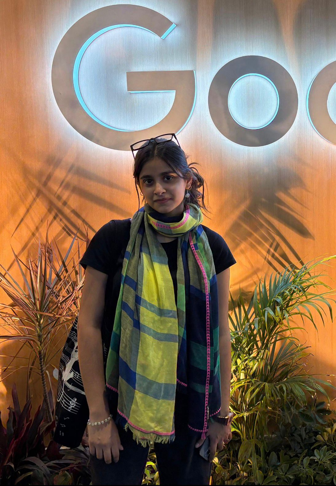

#include <iostream>
using namespace std;
int main() {
> Hi! my name is Aishi 👋!> I am a computer science student passionate about building products you can use today.> I am currently a Machine Learning systems intern at IIT Delhi working with Larsen & Toubro on inference systems that route between multiple specialized vision models in real time.> Before that, I spent a summer at NITI Aayog (Government of India), building an end-to-end ML pipeline that used satellite imagery to map infrastructure across 112 districts, the kind of project where the output feeds into real policy decisions.> I enjoy solving DSA problems and working on projects that carry real world impacts.> I am a 3X Hackathon winner and have also led my team to the finals in Smart India Hackathon 2025.> Off-screen you will find me enjoying public speaking, films, music and reading.> I am always eager to learn new technologies and collaborate on exciting projects. Feel free to connect with me!
}